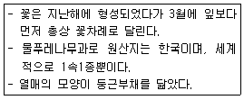
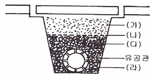
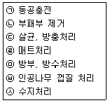

조경기능사 (2008-10-05 기출문제)
1과목: 조경일반
1. 기본 도시계획 중 교통 동선의 분류체계에 해당되지 않는 것은?
- 우회형
- 대로형
- 수평형
- 격자형
(정답률: 63%)

2. 경관구성의 우세요소가 아닌 것은?
- 시간
- 색채
- 형태
- 선
(정답률: 85%)
3. 가는 실선의 용도로 틀린 것은?
- 치수보조선
- 인출선
- 기준선
- 중심선
(정답률: 62%)
4. “일반적인 계단설계 시 발판 높이를 'H', 나비를 'W'라고 할 때 '2H + W = ( )'가 적당하다.” ( )안에 적합한 범위는?
- 40~45cm
- 60~65cm
- 75~80cm
- 85~90cm
(정답률: 81%)
5. 다수의 대상이 존재할 때 어느 색이 보다 쉽게 지각되는지 또는 쉽게 눈에 띄는지의 정도를 나타내는 용어는?
- 유목성
- 시인성
- 식별성
- 가독성
(정답률: 44%)
6. 자연환경조사 단계 중 미기후와 관련된 조사항목으로 가장 영향이 적은 것은?
- 태양 복사열을 받는 정도
- 지하수 유입 및 유동의 정도
- 공기 유통의 정도
- 안개 및 서리 피해 유무
(정답률: 77%)
7. 다름 중 물(水)을 정적으로 이용하는 것은?
- 연못
- 분수
- 폭포
- 캐스케이드
(정답률: 84%)
8. 관상자로 하여금 실제의 면적보다 넓고 길게 보이게 하는 수법은?
- 눈가림
- 통경선(通景線)
- 차경(借景)
- 명암(明暗)
(정답률: 57%)
9. 등고선 간격이 20m인 축적 1/10000 지도가 있다. 인접한 등고선에 직각인 평면 거리가 2.5cm 일 때 경사도는?
- 6%
- 8%
- 10%
- 12%
(정답률: 67%)
10. 미국조경가협회에서 조경은 실용성과 즐거움, 자원의 보전과 효율적 관리, 문화적 지식의 응용을 통하여 설계, 계획하고 토지를 관리하며, 자연 및 인공 요소를 구성하는 기술이라고 새롭게 정의를 내린 년도는?
- 1909년
- 1975년
- 1945년
- 1858년
(정답률: 57%)
11. 옛날 처사도(處士道)를 근간으로 한 은일사상(隱逸思)이 가장 성행하였던 시대는?
- 신라시대
- 고구려시대
- 백제시대
- 조선시대
(정답률: 73%)
12. 창덕궁 후원에 나타나지 않은 것은?
- 향원지
- 주합루
- 부용지
- 옥류천
(정답률: 48%)
13. 네덜란드 정원에 관한 설명으로 가장 거리가 먼 것은?
- 튤립, 히야신스, 아네모네, 수선화 등의 구근류로 장식했다.
- 운하식이다.
- 테라스를 전개시킬 수 없었으므로 분수, 캐스케이드가 채택될 수 없었다.
- 프랑스와 이탈리아의 규모보다 보통 2배 이상 크다.
(정답률: 74%)
14. 정신세계의 상징화, 인공적인 기교, 관상적인 가치에 가장 치중한 정원이라 볼 수 있는 것은?
- 한국정원
- 인도정원
- 중국정원
- 일본정원
(정답률: 71%)
15. 일본에서 고산수(故山水)수법이 가장 크게 발달했던 시기는?
- 에도(江戶)시대
- 가마꾸라(鎌倉)시대
- 모모야마(桃山)시대
- 무로마찌(室町)시대
(정답률: 64%)
2과목: 조경재료
16. 조경공사에 사용되는 섬유재에 관한 설명으로 틀린 것은?
- 새끼줄은 5타래를 1속이라 한다.
- 볏짚은 줄기를 감싸 해충의 잠복소를 만드는데 쓰인다.
- 밧줄은 마섬유로 만든 섬유로프가 많이 쓰인다.
- 새끼줄은 이식할 때 뿌리분이 깨지지 않도록 감는데 사용한다.
(정답률: 82%)
17. 바탕재료의 부식을 방지하고 아름다움을 증대시키기 위한 목적으로 사용하는 도막형성 도료는?
- 바니시
- 피치
- 벽토
- 회반죽
(정답률: 80%)
18. 철재의 일반 성질 중 재료가 파괴되기까지 높은 응력에 잘 견딜 수 있고, 동시에 큰 변형이 되는 성질은?
- 탄성
- 강도
- 인성
- 내구성
(정답률: 55%)
19. 목질 재료의 특성으로 알맞은 것은?
- 무게가 무거운 편이다.
- 가공이 어렵다.
- 재질이 부드럽고 촉감이 좋다.
- 열전도율이 높다.
(정답률: 87%)
20. 목재의 비중 중에서 기건비중이 제일 큰 수종은?(단, 국내산 재료만을 기준으로 한다.)
- 낙엽송
- 갈참나무
- 소나무
- 가문비나무
(정답률: 53%)
21. 일반적인 시멘트의 설명으로 옳은 것은?
- 시멘트의 수화반응 또는 발열반응에서의 발생열을 응고열이라 한다.
- 일반적으로 시멘트라고 불리는 것은 보통 포틀랜드 시멘트를 의미한다.
- 28일 강도를 초기 강도라 한다.
- 포틀랜드 시멘트의 비중은 4.⑤ 이상이다.
(정답률: 75%)
22. 콘크리트 제작방법에 의해서 행하는 시험비빔(trial mixing)시 검토해야 할 항목이 아닌 것은?
- 인장강도
- 비빔온도
- 공기량
- 회반죽
(정답률: 55%)
23. 콘크리트 소재의 벽돌 검사방법(KS) 중 항목에 해당되지 않는 것은?
- 치수
- 흡수율
- 압축강도
- 인장강도
(정답률: 57%)
24. 보차도용 콘크리트 제품 중 일정한 크기의 골재와 시멘트를 배합하여 높은 압력과 열로 처리한 보도블록은?
- 축구용블록
- 보도블록
- 소형고압블록
- 경계블록
(정답률: 82%)
25. 다음 중 화성암이 아닌 것은?
- 대리석
- 화강암
- 안산암
- 섬록암
(정답률: 82%)
26. 주로 흙막이용 돌쌓기에 사용되며 정사각뿔 모양으로 전면은 정사각형에 가깝고, 뒷길이, 접촉면, 뒷면 등이 규격화된 치수를 지정하여 깨 낸 돌은?
- 각석
- 판석
- 호박돌
- 견치돌
(정답률: 88%)
27. 곧은 줄기가 있고, 줄기와 가지의 구별이 명확하며, 키가 큰 나무(보통 3~4m 정도)를 가리키는 것은?
- 교목
- 관목
- 만경목
- 지피식물
(정답률: 89%)
28. 형상수로 많이 이용되고, 가을에 열매가 붉게 되며, 내음성이 강하고, 비옥지에서 잘 자라는 특성을 지닌 정원수는?
- 주목
- 쥐똥나무
- 화살나무
- 산수유
(정답률: 84%)
29. 일반적으로 수목의 단풍은 적색과 황색계열로 구분하는데, 황색 단풍이 아름다운 수종으로만 짝지어진 것은?
- 은행나무, 붉나무
- 백합나무, 고로쇠나무
- 담쟁이덩굴, 감나무
- 검양옻나무, 매자나무
(정답률: 71%)
30. 다음 설명하고 있는 수종으로 가장 적합한 것은?

- 미선나무
- 조록나무
- 비파나무
- 명자나무
(정답률: 86%)
31. 다음 중 개화기가 가장 빠른 것끼리 짝지어진 것은?
- 목련, 아카시아
- 목련, 수수꽃다리
- 풍년화, 생강나무
- 배롱나무, 쥐똥나무
(정답률: 73%)
32. 산울타리용으로 사용하기 부적합한 수종은?
- 꽝꽝나무
- 탱자나무
- 후박나무
- 측백나무
(정답률: 74%)
33. 낙엽침엽수에 해당하는 나무가 아닌 것은?
- 낙우송
- 낙엽송
- 위성류
- 은행나무
(정답률: 75%)
34. 봄 화단에 알맞은 알뿌리 화초는?
- 리아트리스
- 수선화
- 샐비어
- 데이지
(정답률: 60%)
35. 우리나라 골프장 그린에 가장 많이 이용되는 잔디는?
- 블루그래스
- 벤트그래스
- 라이그래스
- 버뮤다그래스
(정답률: 86%)
3과목: 조경 시공 및 관리
36. 다음 중 측량 목적에 따른 분류와 거리가 먼 것은?
- 항만 측량
- 지형 측량
- 노선 측량
- GPS 측량
(정답률: 69%)
37. 횡선식 공정표와 비교한 네트워크(NET WORK) 공정표의 설명으로 가장 거리가 먼 것은?
- 문제점의 사전 예측이 용이하다.
- 일정의 변화를 탄력적으로 대처할 수 있다.
- 간단한 공사 및 시급한 공사, 개략적인 공정에 사용된다.
- 공사 통제 기능이 좋다.
(정답률: 72%)
38. 좁고 얄팍한 목재를 엮어 1.5m 정도의 높이가 되도록 만들어 놓은 격자형의 시설물로서 덩굴식물을 지탱하기 위한 것은?
- 파고라
- 아치
- 트레리스
- 정자
(정답률: 64%)
39. 다음 중 정원관리를 하는데 시간적, 계절적 제약을 가장 적게 받고 관리할 수 있는 것은?
- 정원석 관리
- 잔디 관리
- 정원수 관리
- 초화 관리
(정답률: 89%)
40. 아래 그림은 지하배수를 위한 유공관 설치에 관한 그림이다. 각 부분에 들어가는 재료로 틀린 것은?

- (가) → 흙
- (나) → 필터
- (다) → 잔자갈
- (라) → 호박돌
(정답률: 66%)
41. 크롬산아연을 안료로 하고, 알키드 수지를 전색료로 한 것으로서 알루미늄 녹막이 초벌칠에 적당한 도료는?
- 파커라이징(Parkerizing)
- 그라파이트(Graphite)
- 징크로메이트(Zingcromate)
- 광명단
(정답률: 74%)
42. 콘크리트 소재의 미끄럼대를 시공할 경우 일반적으로 지표면과 미끄럼판의 활강 부분이 이루는 각도로 가장 적합한 것은?
- 35°
- 45°
- 55°
- 70°
(정답률: 80%)
43. 콘크리트 거푸집공사에서 격리재(Separater)를 사용하는 목적으로 적합한 것은?
- 거푸집이 벌어지지 않게 하기 위하여
- 거푸집 상호간의 간격을 정확히 유지하기 위하여
- 철근의 간격을 정확하게 유지하기 위하여
- 거푸집 조립을 쉽게 하기 위하여
(정답률: 65%)
44. 다음 중 원로를 계단으로 공사하여야 하는 지형상의 기울기는?
- 25%
- 5%
- 10%
- 15%
(정답률: 73%)
45. 다음 중 보통 흙의 안식각은 얼마 정도인가?
- 20~25°
- 25~30°
- 30~35°
- 35~40°
(정답률: 49%)
46. 흙 쌓기 시에는 일정 높이마다 다짐을 실시하며 성토해 나가야 하는데, 그렇지 않을 경우에는 나중에 압축과 침하에 의해 계획 높이보다 줄어들게 된다. 그러한 것을 방지하고자 하는 행위를 무엇이라 하는가?
- 정지(Grading)
- 취토(borrow-pit)
- 흙쌓기(filling)
- 더돋기(extra banking)
(정답률: 86%)
47. 돌쌓기의 종류 가운데 돌만을 맞대어 쌓고 뒷채움은 잡석, 자갈 등으로 하는 방식은?
- 찰쌓기
- 메쌓기
- 골쌓기
- 켜쌓기
(정답률: 73%)
48. 데발 시험기(Deval abrasion tester)란?
- 석재의 마모에 대한 저항성 측정시험기
- 석재의 휨강도 시험기
- 석재의 인장강도 시험기
- 석재의 압축강도 시험기
(정답률: 61%)
49. 대형 수목을 굴취 또는 운반할 때 사용되는 장비가 아닌 것은?
- 체인블록
- 크레인
- 백 호우
- 드랙 라인
(정답률: 58%)
50. 큰 나무이거나 장거리로 운반할 나무를 수송 시 고려할 사항으로 가장 거리가 먼 것은?
- 운반할 나무는 줄기에 새끼줄이나 거적으로 감싸주어 운반 도중 물리적인 상처로부터 보호한다.
- 밖으로 넓게 퍼진 가지는 가지런히 여미어 새끼줄로 묶어 줌으로써 운반 도중의 손상을 막는다.
- 장거리 운반이나 큰 나무인 경우에는 뿌리분을 거적으로 다시 감싸 주고 새끼줄 또는 고무줄로 묶어준다.
- 나무를 싣는 방향은 반드시 뿌리분이 트럭의 뒤쪽으로 오게 하여 실어야 내릴 때 편리하게 한다.
(정답률: 89%)
51. 비탈면에 교목을 식재할 때 비탈면의 기울기는 얼마 이상이어야 하는가?
- 1 : 0.5
- 1 : 1
- 1 : 2
- 1 : 3
(정답률: 76%)
52. 다음 중 굵은 가지를 잘라도 새로운 가지가 잘 발생하는 수종들로만 짝지어진 것은?
- 벚나무, 백합나무
- 느티나무, 플라타너스
- 해송, 단풍나무
- 소나무, 향나무
(정답률: 71%)
53. 느티나무의 수고가 4m, 흉고 지름이 6cm, 근원 지름이 10cm인 뿌리분의 지름 크기(cm)는?(단, 상수는 상록수가 4, 낙엽수가 5이다.)
- 29
- 39
- 59
- 99
(정답률: 63%)
54. 옮겨 심은 후 줄기에 새끼줄을 감고 진흙을 반드시 이겨 발라야 되는 수종은?
- 배롱나무
- 은행나무
- 향나무
- 소나무
(정답률: 69%)
55. 다음 중 상렬(霜裂)의 피해가 가장 적게 나타나는 수종은?
- 소나무
- 단풍나무
- 일본목련
- 배롱나무
(정답률: 73%)
56. 파이토플라즈마에 의한 주요 수목병에 해당되지 않는 것은?
- 뽕나무오갈병
- 대추나무빗자루병
- 소나무시들음병
- 오동나무빗자루병
(정답률: 74%)
57. 거름을 주는 목적이 아닌 것은?
- 조경 수목을 아름답게 유지하도록 한다.
- 병해충에 대한 저항력을 증진시킨다.
- 토양 미생물의 번식을 억제시킨다.
- 열매 성숙을 돕고, 꽃을 아름답게 한다.
(정답률: 84%)
58. 다음 중 일반적인 잔디 깎기의 요령으로 틀린 것은?
- 깎는 빈도와 높이는 규칙적이어야 한다.
- 깎는 기계의 방향은 계획적이고 규칙적이어야 미관상 좋다.
- 깎아낸 잔디는 잔디밭에 그대로 두면 비료가 되므로 그대로 두는 것이 좋다.
- 키가 큰 잔디는 한 번에 깎지 말고 처음에는 높게 깎아주고, 상태를 보아가면서 서서히 낮게 깎아 준다.
(정답률: 89%)
59. 소나무류의 순지르기는 어떤 목적을 위한 가지다듬기인가?
- 세력을 갱신하는 가지다듬기
- 생리 조정을 위한 가지다듬기
- 생장을 억제하는 가지다듬기
- 생장 조장을 돕는 가지다듬기
(정답률: 74%)
60. 아래 [보기]는 수목 외과수술 방법의 순서이다. 작업순서를 바르게 나열한 것은?

- ㉠ → ㉡ → ㉢ → ㉣ → ㉤ → ㉦ → ㉥
- ㉡ → ㉢ → ㉤ → ㉠ → ㉣ → ㉥ → ㉦
- ㉢ → ㉥ → ㉦ → ㉣ → ㉠ → ㉤ → ㉡
- ㉥ → ㉡ → ㉣ → ㉢ → ㉤ → ㉦ → ㉠
(정답률: 82%)